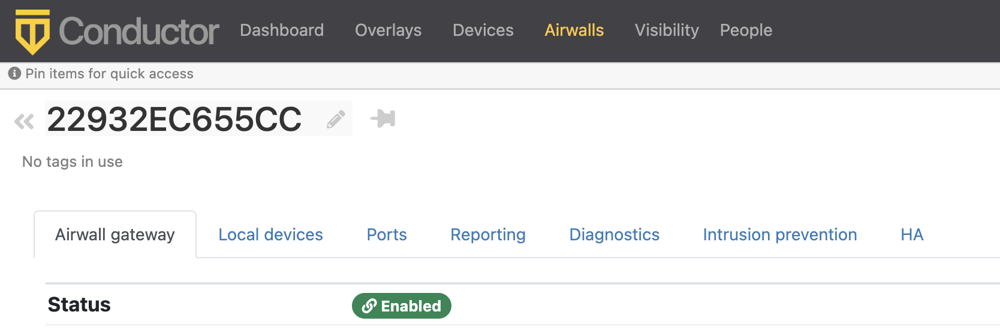

Release Notes v3.1.0
Release Date: Oct 13, 2022
Important Notes
- Update all v2.1.x Airwall Edge Services – Update all v2.1.x and earlier Airwall Edge Services with v2.2.x or later before installing v3.0.0. With this release, any Airwall Edge Services running v2.1.x firmware show an error in the Conductor. For more information, see Update v2.1.x Airwall Edge Services for the v3.0.0 Conductor.
- If you are updating a virtual Conductor to v3.0.0 or v3.1.0 – You may need to expand the disk size for the virtual machine to 1GB. For instructions, see your virtual machine documentation, or the suggested VMware and Hyper-V instructions at Expand the Disk Size for a virtual Airwall Gateway.
Advisory Notices and Product Bulletins
Here are advisory notices and product bulletins since the last major update.
Update Considerations
You may want to update to this version to use the following features:
- Check connectivity with the Connectivity checker
- Do network discovery and security audits in Airshell (nmap)
- Set up Airwall Gateway High-availability Heartbeat options. For how to, see Configure High Availability Airwall Gateways (v2.2.8 and later)
- Run the Conductor as an Airwall Relay
- Customize People's Access to your Airwall secure network with People Groups
- Run Airshell remotely from the Conductor
- Use expressions to Search in the Conductor
Downloads
For firmware and software downloads for this version, see 3.1.0 firmware and software.
What's New in 3.1.0
This version of the Airwall Solution includes several usability and functionality improvements that can simplify and streamline the setup and diagnostics for an Airwall secure network.
Tutorial and Help Improvements
- What's new Tutorial – You can now see what’s new by running the Dashboard tutorial from the Conductor Dashboard.
- Help links for a page – In addition to tutorials, you can now access more specific Airwall help content for a page from the ? menu on most pages.
- Video overviews and demos – For video overviews and demos of the Airwall Solution, see Video Overview and Demos.
New tools to troubleshoot connectivity issues
The Conductor Connectivity checker does a full analysis of the connectivity between two devices in your Airwall secure network.
Learn more – Connectivity checker
Run Conductor as a Relay
For small- to moderate-sized Airwall secure networks, you can run your Conductor as a relay, rather than having a separate Airwall Relay. Since Airwall Edge Services must all be able to reach the Conductor, using it as an Airwall Relay simplifies your deployment. You must have both a Conductor and an Airwall Relay license to run your Conductor as a relay.
Learn more – Run the Conductor as an Airwall Relay
Control Access with People Groups
Using people groups, you can control what the people in the group can see and use on the Conductor, including cloud providers, Airwall Gateways, and Overlay networks and resources. You can also now see to which overlay networks the people group has permissions.
Learn more – Customize People's Access to your Airwall secure network with People Groups
Airwall Gateway High Availability (HA) Heartbeat options
You now have a choice on how the Airwall Gateway HA heartbeat functions. When setting up an Airwall Gateway HA pair, you can choose how to do the heartbeat between the two HA units. There are two options: LAN mode or routed mode.
Learn more – Configure High Availability Airwall Gateways (v2.2.8 and later)
Remote Airshell
For remote administration of Airwall Gateways, you can use Airshell to run diagnostic and configuration commands from the Conductor.
Learn more – Run Airshell remotely from the Conductor
Airshell Additions and Improvements
The following commands and functionality have been added to Airshell:
nmap– (Network mapping support) Maps your network for discovery or security audits. Learn more: Do network discovery and security audits in Airshell (nmap)table– See the table command at Airshell (airsh) Command Reference.conductor ping– Newconductor pingAirshell command for Airwall Gateways, Linux Airwall Servers, and macOS Airwall Agents checks name resolution and performs TLS connection attempt with every configured Conductor URI.status dnscacheandstatus dnscache flush– For Airwall Gateways, dumps or flushes the DNS cache.status threads– Reports CPU and memory usage of threads of major services running on an Airwall secure network.status– Results now show information (revision hash and date) for the installed cellular firmware package.
Learn more – Airshell (airsh) Command Reference
Conductor and Airwall Edge Services Improvements
Navigation and Search
- Back Navigation – On most pages, you now have a link back to the original
page. For example, from an Airwall Edge Service page, you can select the back icon to get back to the list of Airwall Edge Services.

- Search by Expression – The Conductor now supports an alternative to full text search, searching by expressions using the Conductor Query Language. Searching by expression is available in the search boxes on the Overlays, Airwalls, Devices, People, and Dashboard pages. Learn more: Search by Expression with the Conductor Query Language
- Device quick filter – The quick filter for devices is now also available on the Dashboard Devices list.
Overlay network graph
- Multi-select – Select more than one item on the network graph by holding down the meta key for your platform (Ctrl on Windows, or cmd on macOS) and clicking on multiple items. You can then use the context menu to create a device group or remove the items from the network.
- Overlay Edit options – The network graph also now has Edit layout and Edit trust options.
- Create device group – You can now create a device group by using multi-select to select devices, then right-click to create a device group.
- Airwall model information – When you hover over an Airwall Edge Service in the Airwall Edge Service network graph, the graph now shows the Airwall Edge Service model.
Learn more: Add and remove device trust
Set a preference for your overlay networks view
Go to and scroll down to the bottom. Toggle the Default overlay networks to advanced view to show or hide the advanced view by default.
Learn more: Change My Conductor Preferences
Diagnostics and Monitoring Improvements
- Email failure alerts – When emails fail to send, the Conductor now shows alerts and records system events.
- Summary for check secure tunnels – There is now a summary for the Check secure tunnels Airwall Edge Service diagnostic tool indicating the number of remote Airwall Edge Services and the number of active tunnels.
- Firmware Revision information – In the Conductor, on an Airwall Edge Service page, revision information is shown on the main page below the Airwall Edge Service's firmware revision.
- Ping peer Airwalls – This diagnostic tool now indicates if traffic was conducted over a relay and which relay it used.
- Airwall Relay diagnostics – on an Airwall Relay now shows the IP addresses of the communicating Airwall Edge Services, as seen from the viewpoint of the relay.
- HIP tunnel stats – HIP tunnel stats now default to On, and are sent every 5 minutes for newly-connected Airwall Edge Services that support the feature. Go to to see how much traffic you have over each tunnel.
- HIP tunnel event monitors – You can now configure a delay for actions on HIP tunnel event monitors, allowing you to reduce noise for transient events (for example, an Airwall Edge Service that goes offline briefly). There is also improved tracking and messaging around why a tunnel has closed. You can filter on the reasons a tunnel closed so that event actions are not performed for certain reasons. For example, you may not want to alert when a tunnel goes down due to an idle timeout (no traffic passed).
- More fields for Templated values in Event monitor actions - You can now use any data that is part of the monitored object by adding it as a templated value. For example, in the HTTP call action, you could use the Airwall Edge Service's name with "${monitored_object.name}", or get a device's overlay IP with "${monitored_object.overlay_device_ip}".
- PCI user activities – Now indicate if an action was performed via API.
Airwall Agents and Servers Improvements
- Linux – The Linux Airwall Server now supports traceroute from the Conductor diagnostic page when installed and available. Looks for the presence of traceroute or tracepath. It also now remembers its state when you update the firmware, and return to that state after the update (either active or inactive).
- Android – The Android Airwall Agent now restarts when you update the app, or if you restart the device while the app service is running. You can also now ping devices on the Network page.
Deployment Improvements
- Cloud accounts – The Airwall Gateway detects the cloud accountid used during deployment and sends that provider-specific value to the Conductor.
- Google Cloud – There is now a standalone Airwall Gateway deployment for Google Cloud.
- Device discovery – The Conductor now shows the time a device was discovered.
- Easier OpenID Connect integration troubleshooting – It is now easier to troubleshoot integrating your Conductor with an OpenID Connect provider using Conductor Airshell and log following. Learn more: Integrate Third-party Authentication with OpenID Connect
Security and Privacy Updates
- New overlay network role for Network Administrators – The roles available for overlay permissions now are viewer, user, or manager. For more information, see Edit people who can access an overlay network.
- New
conductor pingairsh command for Airwall Gateways, and macOS and Linux Airwall Agents and Servers – Checks name resolution and performs TLS connection attempt with every configured Conductor URI. Learn more: Diagnostic commands - Tag Ownership – With v3.1.0, the tag ownership rules have changed to be more restrictive by default. If a system administrator creates a tag, by default, only system administrators can see or use them. If a network administrator creates a tag, ownership defaults to only them or their people group, and system administrators. This change allows you to have department or customer-specific tags that only members of specific people groups can see and use. Learn more: Manage Tag Ownership
- Airwall Diagnostic permissions – Diagnostics now require a network admin to have edit permissions on the Airwall Edge Service.
- Lock Airwall Edge Services – You can lock an Airwall Edge Service so only system administrators can edit it. Learn more: Lock an Airwall Edge Service
- Login notifications – The Conductor notifies admins the first time a user logs in, and the Conductor also shows a user’s last log in when they log in, including through OpenID Connect Third-party integrations.
Onboarding Improvements
- Delete Airwall Invitations – You can now delete Airwall Invitations, both in the Conductor, and from the API.
- Replace an Airwall Agent or Server – You can now send an Airwall Invitation from a specific Airwall Agent or Server, and when the user activates the invitation, the Conductor automatically revokes and replaces the Airwall Agent or Server from which you sent the Airwall Invitation.
- Device detection improvements – The device detection workflow (and the related dialog) have been updated to streamline the onboarding process. The dialog now allows the user to detect devices and then, as they are detected, update their names and IP, apply an overlay IP NAT from a NAT pool and add them directly to an overlay.
- Set an Airwall Gateway name using Airshell before provisioning – You can now check the Allow Airshell to set name option when sending Airwall Invitations. When checked, you can use Airshell to set an Airwall Gateway's name before using the activation code to provision and manage it. If you use the invitation for other Airwall Edge Services, it is ignored.
- New options for user onboarding – When you onboard people using
activation codes using either Airwall Invitations or
People group user onboarding, you can now set up these new options:
- User auth for remote sessions
- Airwall Agent's or Server's overlay device IP netmask
- Bypass Airwall Gateway
Logging Updates
- Per-Airwall logging – You can now configure remote syslog and overlay traffic logging per Airwall Edge Service. Learn more: Set overlay traffic logging for an Airwall Gateway.
- Set global overlay traffic logging – You can now set overlay traffic logging globally for your Airwall secure network on the page for an Airwall Gateway that supports it.
- Log rate limiting – The Conductor
now rate limits log messages to 100 messages per second. You can examine rate
limiting details using the Airshell command:
log status <hip|ebm2>. Learn more: Status Commands.
Airwall Relay Updates
Message rate limiting – An Airwall Relay now rate-limits "Relay missing client address" messages to once every 15 minutes per client.
New and Updated Help
In addition to the content added for new features linked above, here’s the new and updated content published since our last major release:
- Move an Airwall Gateway to a Different Conductor
- Deploy a Conductor in Microsoft Hyper-V
- How to Update from Older Versions
- Airwall Agent or Server or Airwall Gateway using IPv6 has trouble connecting
- Event Monitors and Alerts Reference
- Auth0 Update does not affect OpenID Connect Integration
- U.S. Cellular Carrier Certifications
- 3G Sunset – Required Cellular Firmware Update for 110g
- Manage Airwall Edge Services from an Overlay
- Overlay Timelines
- Device page
- Set a Proxy Server
- Configure an authenticated Airwall Agent or Server session
- Knowledge Base (KB) Articles - 90 KB articles are now available in Airwall Help
- Step 1: Add Alibaba Cloud as a provider to your Conductor
- Microsoft Azure – Set up an Airwall Gateway – Create Application
- Airshell (airsh) Command Reference
- Install a Custom CA Certificate Chain
- Put an Airwall Gateway into diagnostic mode
- Put the Conductor into diagnostic mode
- Backhaul Bypass
- Search in the Conductor
- Edit people who can access an overlay network
- See Airwall Edge Service Information and Status
- Security Notices
Fixes
| ID | Applies to | Description |
|---|---|---|
| DEV-18102 | Airwall Gateways | Fixed an issue that caused the IDS not to start or reboot in certain configurations. |
| DEV-18001 | Airwall Gateways | Fixed an issue where HA secondary Airwall Gateways didn't share the bypass gateway settings of the HA primary Airwall Gateway. |
| DEV-17973 | Airwall Gateways | When a lock is contended, bypass now retries applying underlay/bypass firewall rules. |
| DEV-17905 | Linux Airwall Servers | Fixed an instability in the Linux Airwall Server running on Fedora. |
| DEV-17881 | OpenHIP | Fixed a crash handling JsonRPC requests. |
| DEV-17878 | Conductor | Fixed an issue where bypass gateway settings could be misleading when an Airwall Edge Service was set up to use local bypass. |
| DEV-17847 | Airshell | Improved usability of Airshell results: Now show "Provisioned: yes/no" and "Device key: (keystore type)(file present/missing if file keystore type)" |
| DEV-17839 | Airwall Gateways | Fixed an issue where health data "Relay sessions" (sadb_relay) were not shown in the UI. Fixed an additional issue where the value reported by the Airwall Gateway was doubled (one for each side of a relay session). |
| DEV-17818 | Airwall Gateways | Fixed an issue where port group ID was conflated with index. Now "PGID" in "airsh policy" shows the actual port group ID. Also added "pg_id" to the io_channel tmstat table. |
| DEV-17784 | Conductor | An unmanaged or revoked Airwall page now hides information that is not relevant. |
| DEV-17761 | macOS Airwall Agents | Fixed two minor issues with new Path MTU TLV. |
| DEV-17750 | Conductor | Fixed an issue where users would sometimes not receive an email after receiving an activation code from a people group. |
| DEV-17716 | Conductor | Fixed an issue where the Airwall Gateway page showed an erroneous bypass IP conflict. |
| DEV-17637 | Conductor | Fixed an issue where the incomplete edge would disappear if the network received an update during new edge dragging in policy edit mode for the network graph. |
| DEV-17605 | Conductor | Fixed an issue where adding a device to a device group as a result of using an activation code would not trigger recalculation of any smart device groups that rely on that device group. |
| DEV-17593 | Linux Airwall Servers | Fixed an issue where the Linux Airwall Servers had an "Operation unsupported" error during interface discovery. |
| DEV-17580 | AWS, Conductor | Fixed an issue with Conductor formatting the nvme drive on Amazon Web Services. |
| DEV-17562 | Conductor | Fixed a formatting issue where remote device overlays would be on multiple lines causing them to be misaligned with the devices they refer to. |
| DEV-17549 | Airwall Gateways | Improved local device (and remote device for backhaul bypass egress gateways) scalability. |
| DEV-17498 | Conductor | The network graph has been updated to be more efficient with very large node counts. |
| DEV-17439 | Conductor | Fixed overflow issues with ipv6 addresses in dialogs. |
| DEV-17434 | Conductor | Fixed terminology around Airwall Gateway High-Availability (HA). |
| DEV-17427 | Common | Route summarization improved to process large routing tables faster. |
| DEV-17405 | Conductor | Fixed an issue where bypass gateways with local devices may not be configured properly in overlay networks that have bypass devices. |
| DEV-17370 | Fixed an issue that could cause a crash of the metadata service on the Conductor. | |
| DEV-17323 | OpenHIP | Added improved logging for an unlikely case when attempting to establish a tunnel to a peer Airwall Gateway that has "publish IP address to Conductor" disabled on all underlays and doesn't have relay. In this configuration, initiating a tunnel to that peer is not possible. |
| DEV-17319 | Airwall Gateways | Fixed an issue that could prevent bypass traffic from Airwall Agents and Servers if the bypass gateway is HA configured. |
| DEV-17317 | Airwall Agents and Servers | Fixed an issue that caused Airwall Agents and Servers to allow traffic to blocked bypass destinations when those could be reached directly on the underlay network. |
| DEV-17311 | macOS Airwall Agents | Fixed an issue that could cause Airwall Agents and Servers tunnel traffic problems under rare circumstances. |
| DEV-17300 | Conductor | Fixed an issue where Airwall Edge Services using the default bypass gateway may have not been given the correct configuration to fully access it. |
| DEV-17270 | Airwall Gateways | Airshell policy output is now aligned in columns |
| DEV-17264 | Airwall Gateways | Fixed an issue with overlay route summarization when local device doesn't match any connected or overlay routes and has port affinity or there is only a single overlay port group and no bypass. |
| DEV-17238 | DataPlane | Fixed excessive packet buffer allocations and encrypt_engine rx_pkts counter. |
| DEV-17231 | tnw-basic | Fixed a crash on service shutdown. |
| DEV-17207 | Conductor | Fixed an issue that was breaking the OUI list. |
| DEV-17175 | Conductor | System admins can now use all tags. |
| DEV-17171 | Conductor | Fixed an issue causing all new devices added to a network to be placed in the same spot on the network graph. |
| DEV-17140 | Conductor | Fixed issue where Airwall Agents would not display as disabled in the network graph |
| DEV-17135 | OpenHIP | Fixed an issue with tunnel keepalives that results in an OpenHIP error message (openhip: [WARNING] encrypt_engine_rx_pkts: received packet without HIT: ...) and Airwall Edge Services fall back to HIP UPDATE keepalives. |
| DEV-17129 | Conductor | Fixed an issue where changes to password requirements would sometimes not take effect until the Conductor was rebooted. |
| DEV-17123 | Conductor | Fixed an issue where generated passwords would always be 10 characters long rather than honoring the minimum password length set by the user. |
| DEV-17122 | Airwall Gateways | Fixed a service hang when reconfiguring overlay port groups. |
| DEV-17115 | Conductor | Fixed an issue where network admins might not be able to view the relays in an overlay managed relay rule. |
| DEV-17048 | Common | Fixed tmstat: BUG: tmsegment_free invoked on a handle with rows outstanding |
| DEV-17008 | Conductor | Fixed a usability issue where device match rules could use system managed Airwall groups. |
| DEV-16994 | Conductor | Fixed an issue where it is unclear as to why the relay probes diagnostic shows "Unknown" for relays that a network admin does not have permissions to view. |
| DEV-16986 | Azure Cloud Airwall Gateways | Fixed an issue where some cloud attributes were not retained during firmware upgrades and, in some cases, after a reboot. |
| DEV-16983 | Conductor | Truncated names now have their full name displayed as hover text. |
| DEV-16924 | Conductor | Network admins now only see events that pertain to them and their permissions. |
| DEV-16913 | Conductor | Fixed an issue where some overlays might not be found when using filtering via the API index endpoint |
| DEV-16907 | Conductor | Fixed an issue where cellular Airwall Gateways on versions prior to 3.1.0 would have a /0 prefix erroneously report 'invalid' for the gateway. |
| DEV-16874 | Common | Fixed a duplicate timestamp in Airwall Gateway and Conductor logs. |
| DEV-16868 | Conductor | Fixed an issue where the result for ping device was misaligned |
| DEV-16814 | Conductor | Network admins that only have access to the simplified UI will now have the ability to create device groups from the dashboard tab. |
| DEV-16746 | Conductor | The Conductor now validates that overlay and underlay addresses on Airwall Gateways are not unspecified, loopback, or multicast addresses. |
| DEV-16713 | Linux Airwall Servers | Fixed an issue where firmware installation times were incorrect, and now sort times by the most recent to the oldest. |
| DEV-16692 | Airwall Agents and Servers | Fixed an issue where no Health Data was reported while an Airwall Edge Service was in Disconnected Mode. |
| DEV-16646 | Linux Airwall Servers | Fixed an issue that prevented Linux Airwall Servers from generating cloud attributes when deployed to a cloud provider. |
| DEV-16644 | Linux Airwall Servers | Fixed an issue where the Linux Airwall Server ping single IP from the overlay wasn't working. |
| DEV-16533 | Conductor | Fixed an issue where name and description lengths were not validated when importing people. |
| DEV-16532 | Conductor | Improved layout in the Person import dialog. |
| DEV-16530 | Conductor | Fixed a dark mode styling issue with the errors table when importing people. |
| DEV-16527 | Conductor | Fixed a redirect loop that occurred when a logged in user is set to inactive. The user should now be returned to the login screen |
| DEV-16525 | Cloud Airwall Gateways, Conductor | Fixed an issue where, with individual route injection for cloud Airwall Gateways enabled, devices added to groups that already have policy with a cloud Airwall Gateway did not correctly update the cloud provider's routing tables. |
| DEV-16497 | OpenHIP | Fixed an issue that caused a brief packet drop and/or forgetting tunnel MTU with an SA rekey. |
| DEV-16496 | Airwall Gateways | Updating the Overlay MTU in the Conductor now updates existing tunnels using a larger tunnel MTU. Existing tunnels using a smaller MTU will continue to use the smaller MTU until the tunnel is rebuilt. |
| DEV-16483 | OpenHIP | Updating Airwall tunnel stats reporting interval no longer requires restarting the dataplane, but disabling or enabling this feature still requires a restart impacting traffic flowing through the Airwall. Fixed benign error message: "Invalid sa_stats window". |
| DEV-16425 | Conductor | When setting trust on an overlay network graph, you can now select something from the context menu by clicking anywhere in row rather than just on the text. |
| DEV-16412 | Airwall Gateways | You can no longer add duplicate VLAN tags to a single port. |
| DEV-16407 | Diagnostic mode | Improved the reliability of Check Conductor URL in Airwall Gateway Diag mode. |
| DEV-16382 | Conductor | Network admins who do not have the "Can view full user interface" permission but do have permission for Airwall groups and relay rules can now create both from the dashboard. |
| DEV-16313 | Conductor | Customization settings for email colors are now hidden until email settings are configured. |
| DEV-16220 | Android and macOS Airwall Agents | Fixed an issue where Airwall Agents could connect sooner than configured in Disconnected Mode. |
| DEV-16116 | Conductor | Fixed some irregularities with the user experience of reports for non-system administrators. |
| DEV-15976 | Conductor | Fixed an issue where certificate expiration notifications were showing the View button for its HA partner. |
| DEV-15338 | Linux Airwall Agents | Linux Airwall Servers now use a predictable MAC address (derived from identity and platform configuration) so systemd-network shouldn't attempt to change it. |
| DEV-14739 | Airwall Gateways | Fixed configuring Airwall Gateway underlay with DHCP for both IPv4 and IPv6. |
| DEV-14211 | Airwall Gateways | Added support for configuring automatic IPv6 addresses using DHCPv6 stateless. |
| DEV-13591 | Conductor | Fixed an issue with long words in invitation email "Note from the administrator" causing the email to display incorrectly. |
Known Issues
| ID | Applies to | Description |
|---|---|---|
| DEV-17887 | Cloud, Conductor | If you use unrecognized credentials when calling jobs on a cloud
Airwall Gateway, the Conductor sends multiple error messages when it tries to call route
injection and validate cloud attributes. Workaround -- Make sure your cloud credentials are correct on the Cloud Providers page under Conductor Settings.. |
| DEV-17648 | Linux Airwall Servers | Many Airshell functions (including changing log level) are non-functional until you have configured and licensed your Conductor. |
| DEV-17263 | Conductor | If you fix a conflict in a smart device group by changing the IP
of one of the conflicted devices, sometimes the change in IP does
not result in the device being removed from the group and the change
is not propagated to the Airwall Gateway. Workaround – Fully remove the device from the smart device group and then add it back again. |
| DEV-16999 | 150 Airwall Gateways | On some 150 Airwall Gateways, the port 5 SFP LEDs may not light up when the port is actually linked and active. |
| DEV-16503 | macOS Airwall Agents | Deleting a profile does not immediately delete the associated
private key. Workaround – Switch to a different profile before creating a profile after deleting one. |
| DEV-16431 | Conductor | When you specify a port mirror destination IP address for an Airwall Gateway, make sure it doesn't conflict with any of the local device IPs on that Airwall Gateway. |
| DEV-16397 | Conductor | If you change the LSI prefix and have port mirroring configured, you need to either reboot the Conductor, or go to and select Restart metadata cache to update the LSI prefix. |
| DEV-16068 | Amazon Web Services Conductor | To enable enhanced networking for a cloud Amazon Web Services Airwall Gateway or Conductor, use the custom images instead of the marketplace image. |
| DEV-16067 | Cloud, Conductor, Airwall Gateways | If you are adding a new interface to an existing cloud Airwall Gateway, you must set the source and destination check to false (see your cloud provider for the terminology they use for source and destination checks). |
| DEV-16059 | Airwall Gateways | When HA-pairing two Airwall Gateways that do not have the HA link plugged in correctly, the Conductor displays no actionable error message and the HA setup never completes. |
| DEV-15982 | Conductor | Traffic stats reporting graphs generally show a smooth curve between data points. However, over time the graph can show up with sharper angles. The data is still correct, but this is a known issue with the graphing library used by the Conductor. |
| DEV-15945 | Airwall Gateways | If you configure port mirroring using a remote destination local device, GRE/ERSPAN traffic from remote Airwalls will arrive with a source IP in the LSI prefix (defaults to 1.0.0.0/8). |
| DEV-15923 | Airwall Gateways | When you run Check secure tunnels on a v3.0 Airwall Gateway, the check falsely reports a bad tunnel status for any peer Airwall Gateway running a firmware version that is v2.2.8 or earlier. |
| DEV-15887 | Airwall Gateways | You cannot currently add VLAN interfaces to the Ruggedcom platform. |
| DEV-15808 | Google Cloud Airwall Gateways | Google Cloud Airwall Gateways with the same VM name have the same device serial number, which
can result in a failure when you make a license request in the Conductor. Workaround – In Google Cloud, use unique deployment names (VM names) for Airwall Gateways. |
| DEV-15791 | Airwall Gateways | On the Airwall Gateway 100, Port 2 might be inactive after a
factory-reset. Workaround – After a factory reset, manually reboot the Airwall Gateway 100. |
| DEV-15705 | macOS Airwall Agents | Establishing a tunnel TO a mobile Airwall Agent (iOS or Android) fails when there is no Airwall Relay involved. Workaround – Establish the tunnel FROM the mobile Airwall Agent. |
| DEV-15572 | Airwall Gateways | If you do not specify a gateway in the DHCP server configuration,
the DHCP client cannot configure a default
gateway. Workaround – Unless you want to configure a single isolated subnet, always specify a gateway. For example, a subnet for networked PDUs that should not have any outside connectivity aside from remote access through an Airwall Gateway, and used in conjunction with SNAT over the overlay port group. See https://tempered.force.com/TemperedSupportCenter/s/article/DHCP-server-isn-t-serving-as-a-gateway. |
| DEV-15357 | macOS Airwall Agents | If you update the macOS Airwall Agent to a release later than v2.2.11 on macOS Mojave using a Conductor-based update package, it may not report the updated version to
the Conductor. Workaround – Restart the Airwall Agent or reapply the update. |
| DEV-15302 | macOS Airwall Agents | The profile for a macOS Airwall Agent does not work correctly when restored to a new computer using
Time Machine. Workaround – Create a new profile on the Airwall Agent, and then on the Conductor, replace the old profile with the new one. |
| DEV-15219 | Cellular 110g Airwall Gateways | The Airwall Gateway 110g does not on the Bell Mobility (Canada) cellular provider because they require the use of a http/https proxy. |
| DEV-15031 | Airwall Gateways | Remote syslog over TLS doesn't work when using keys stored in TPM. |
| DEV-14860 | Conductor | Airwall Gateways on older firmware (pre v2.2.0) may send passively-discovered device events to the Conductor even when the feature is off. |
| DEV-14835 | Conductor | Airwall Gateway 150 serial numbers look like exponentiated numbers to Windows Excel, so the column displaying the Serial number shows xxxEyyy instead of the full serial number. |
| DEV-14736 | Cellular Airwall Gateways | Cellular details may display as "unavailable" on the first boot
after you update an Airwall Gateway. The cellular connections are not affected. Workaround – Reboot the Airwall Gateway again to correctly display the cellular details. |
| DEV-14726 | Conductor | If you're viewing an Android Airwall Agent
Ports tab and the Airwall Agent changes how it is connected to the Conductor (for example, from WiFi to cellular), the display does not update
correctly. Workaround – Refresh the page. |
| DEV-14715 | macOS Airwall Agents | Big Sur ARM64 Macs are not supported in this release |
| DEV-14610 | Conductor | After changing the Reporting traffic stats reporting time, the
CPU graph does not display. Workaround – Refresh your browser page. |
| DEV-14584 | Cellular Airwall Gateways | Hot swapping the SIM on an Airwall Gateway 110 with firmware version v2.2.11 may not work.
Workaround – Reboot the Airwall Gateway after installing a new SIM card. |
| DEV-14551 | Conductor | The Android Airwall Agent lets you press the Edit Settings button on the Ports page; however, submitting any changes to the page results in an error message. |
| DEV-14426 | Conductor, Airwall Gateways | Bypass destinations with a hostname do not show device activity in the Conductor. |
| DEV-14308 | OpenHIP | Initial packets are dropped while building a new tunnel to a new peer Airwall Gateway. |
| DEV-14223 | Google Cloud | To talk to a device behind a 300v Airwall Gateway running on Google cloud, add an overlay IP to an Airwall Agent or Server. |
| DEV-14218 | Airwall Gateways | NAT broadcast applied to traffic between ports within a single port group. Use an external switch if you need to connect multiple devices to a single port group and use the NAT broadcast feature and require IP broadcast un-NATed between those local devices. |
| DEV-14015 | OpenHIP | If an Airwall Relay is also used as a bypass gateway, Airwall Edge Services behind the relay are not able to use that relay.
Workaround – Deploy multiple relays so at least one relay is usable by each pair of Airwall Edge Services that need to communicate. |
| DEV-13775 | Azure Cloud Airwall Gateways | The Conductor might rarely give a "Net::ReadTimeout" error when you try to deploy an Azure Airwall Gateway 300v or server. This error doesn't indicate that the deployment has failed. If you get this error message, go to Azure portal and check the actual deployment result. |
| DEV-13650 | Conductor | SoIP device activity is not being reported on an Airwall Gateway Local Devices tab. |
| DEV-13640 | Conductor | Airwall Relay diagnostics do not work on a Standby Conductor. |
| DEV-13633 | Conductor | A standby Conductor shows available firmware downloads, but they cannot be
downloaded. Workaround – Download firmware from the active Conductor. |
| DEV-13620 | Conductor | In , the failover ping occurs only every "ping rate" + "ping timeout" seconds, somewhat unexpectedly. |
| DEV-13607 | Conductor, Airwall Gateways | Creating a link failover group () does not apply the settings to any port groups. You must also assign the failover group to port groups on the Ports page. |
| DEV-13588 | Conductor | Opening the Conductor on Internet Explorer 11 can be very slow for medium to large
deployments. Workaround – Use the latest version of Chrome, Firefox, or Edge instead. |
| DEV-13531 | Cloud Conductor | Automatically creating Cloud HA Conductors only works if you use the same cloud provider for both active and
standby Conductors. For example, AWS HA Active and AWS HA
Standby. Workaround – You can manually set up different cloud providers as HA pair Conductors. |
| DEV-13474 | Airwall Gateways | If you configure multiple overlay port groups with the same overlay IP subnet (same or different IP addresses) and then create a local device equal to the entire subnet with port affinity set, it may not lead to the expected result. |
| DEV-13331 | Alibaba Cloud Airwall Gateways | The Alibaba Cloud Conductor system time is incorrect. Workaround – Change the Conductor system time to browser time: In Conductor Settings, under System time, select Edit Settings, select Set browser time, and then select Update Settings. |
| DEV-13195 | Conductor, Airwall Gateways | When you upgrade a Cellular Airwall Gateway-150 from 2.2.3 to 2.2.5, the cellular details all become
"Unavailable." Workaround – Reboot and the details return. |
| DEV-13194 | Conductor | for an Airwall Gateway fails in Internet Explorer 11 if one of the devices is defined as
a CIDR. Workaround – Use one of the latest versions of Chrome, Firefox, Safari or Edge. |
| DEV-10590 | Cloud Airwall Gateways | The Conductor does not display an error when adding a route that would exceed the maximum number of allowed routes in the cloud provider. |
| DEV-10039 | Airwall Gateways | An Airwall Gateway-150 can show "could not detect attached switch" intermittently. |
| DEV-9546 | Airwall Gateways, Airwall Gateways 150 | The Airwall Gateway-150 serial connection has an intermittent issue when large amounts of data are sent over the console. |